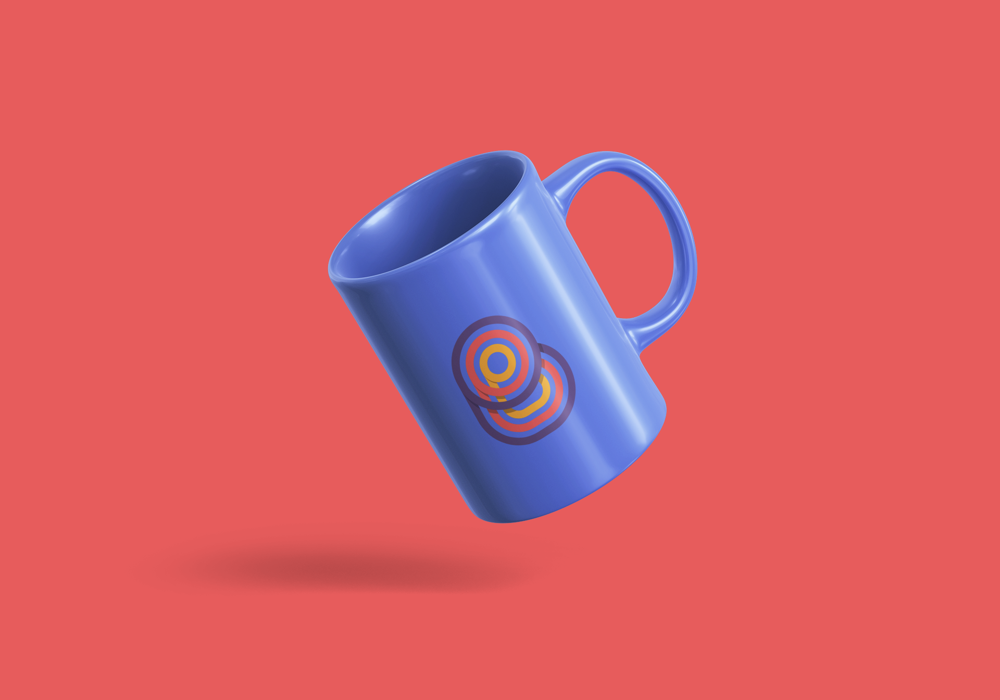

Bolo-
bedu

{{projects[0].title}}
Tools
- {{projects[0].tools[0]}}
- {{projects[0].tools[1]}}
Established in 2017, BYLS or Bolobelu Youth Leadership Summit is an organization directed towards the youth to help navigate through life challenges such as crime and violence using motivational talks and activities in the pursuit of personal and leadership development among the culture.
Because the organization is targeted towards Youth, the brand had to be appealing and colourful in a model manner, also to say “fun” as a way implying something positive.
My approach to this was using specific bright colours and design elements that feel Friendly and uplifting much like the overall intent of the organization .
Year
{{projects[0].year}}